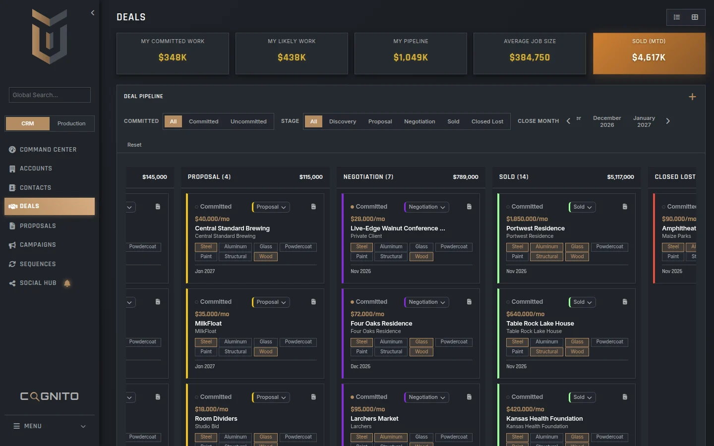
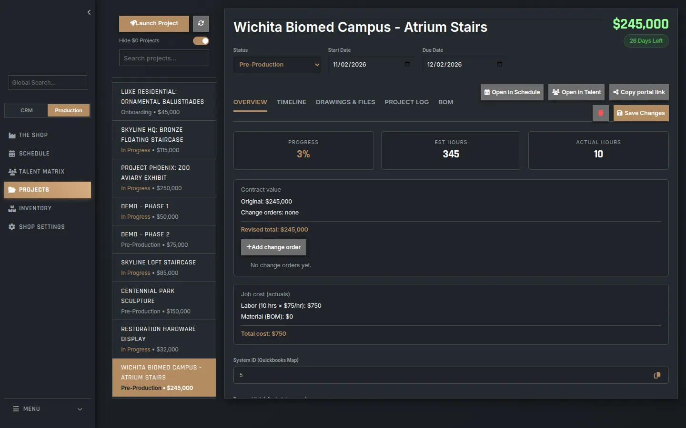
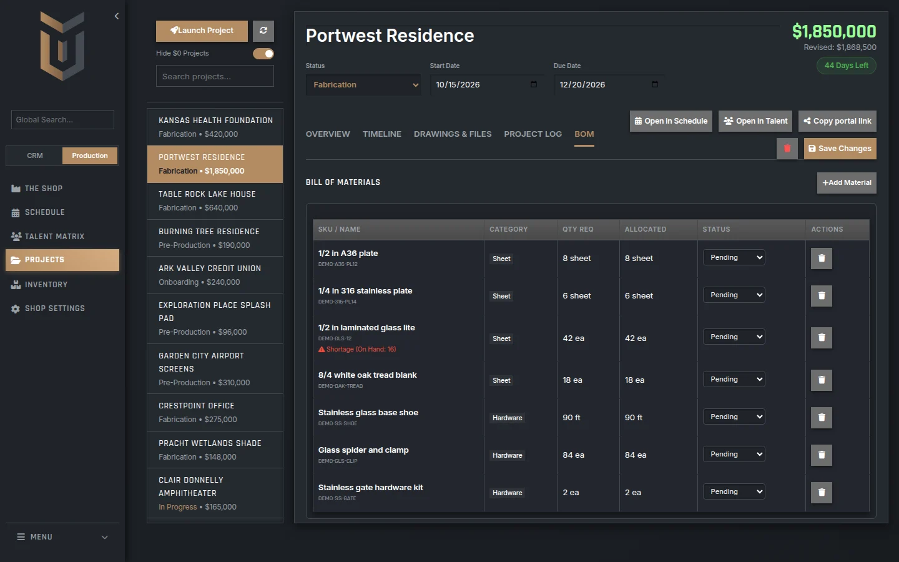
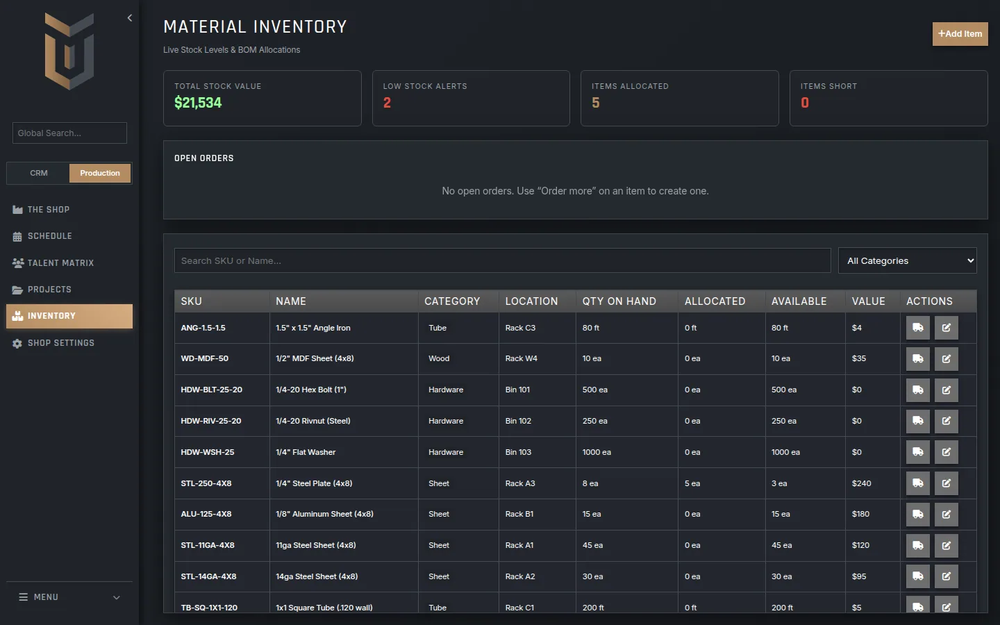
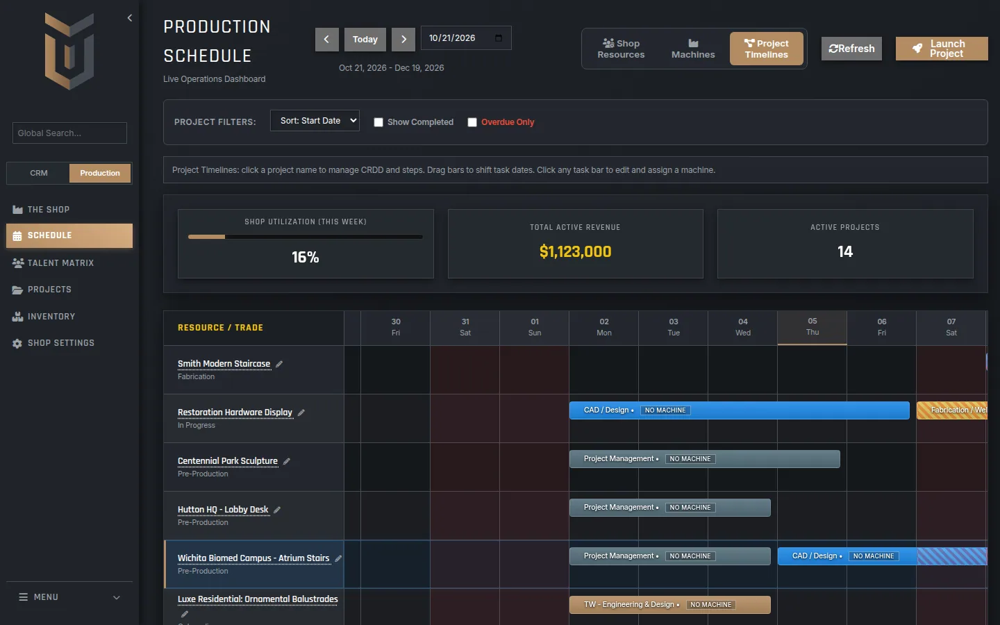
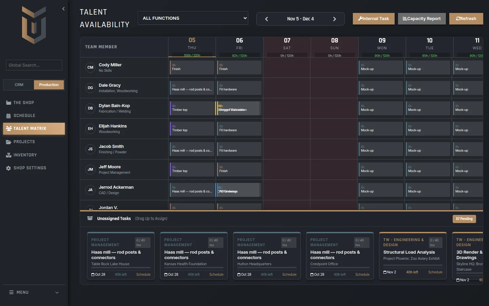
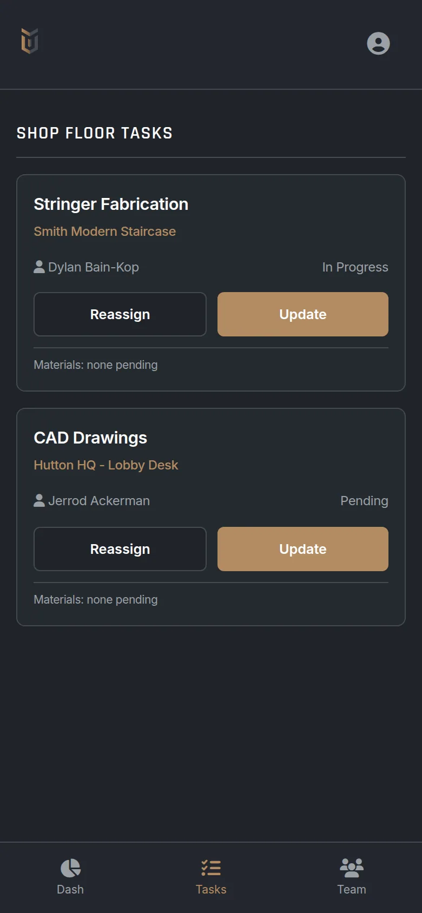
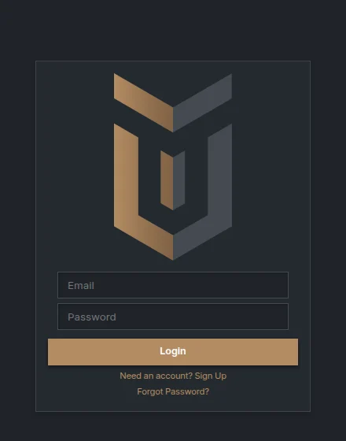
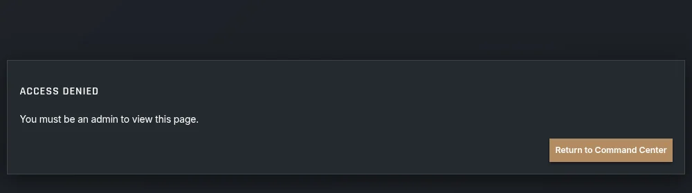

The book
Sold is the word.
A job moves through Discovery, Proposal, and Negotiation. When it is Sold, it is ready to launch as a project: dates, tasks, and the people who will build it.
The board and the list are the same book. Commit what you mean to build. Filter by close month. The month-to-date number on the gold card is Sold.


The job
Then it is a project.
Sold work lands here. Status, start, due date, contract value, labor, and a place for change orders. Open it on the schedule or the talent matrix. Copy a portal link when the client should see where the job stands.
The list beside it is the shop’s book of work: staircases, railings, a lobby desk, a sculpture, a zoo aviary. Real jobs, real dollars.
Materials
Plate, plywood, and what is short.
The bill of materials hangs on the job. The rack hangs on the shop. Allocated, pulled, or short shows up on the line. Stock value, low-stock alerts, and what is already spoken for sit above the inventory list.


The week
A schedule you can argue with.
Project timelines put every job on a bar. Shop resources group the same work by trade. Drag a bar to move a step. Click it to assign a machine. The header keeps this week’s load, the revenue sitting on active jobs, and how many of those jobs are in motion.


The crew
Hours, by person, by day.
The talent matrix is capacity. Each person, their trade, the hours already on them, and the open tasks underneath. Drop work onto someone when the week can take it. The capacity report rolls the same window up by person.
The floor
Same system. Pocket sized.
The shop floor app is a progressive web app. Today’s tasks, who has them, a tap to update or hand the work off, and a line for materials. A phone that opens the shop goes straight here. Add it to the home screen and it stands alone.

The lock
Signed in, or you are not in.
Sign-in is Supabase Auth. The shop tables — projects, tasks, inventory, BOM, talent — use row level security. A signed-in person can work them. An anonymous request gets nothing. Deal rows stay with the person who owns them. User lists, the activity log, and script logs are admin-only, gated on is_admin.
That is the gate. This page does not carry a compliance badge, because the shop has not claimed one.


On the board
Calendar and email, still to port.
Nylas calendar sync and email sync are not in this build. They were never ported. When they land, they land here. Until then, the schedule inside TenWorks is the shop’s schedule.